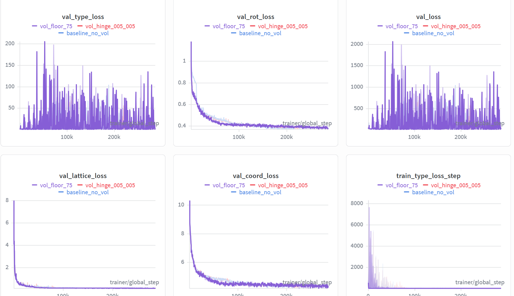
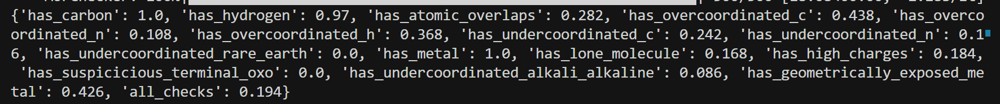
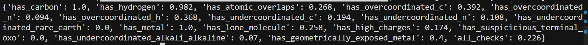
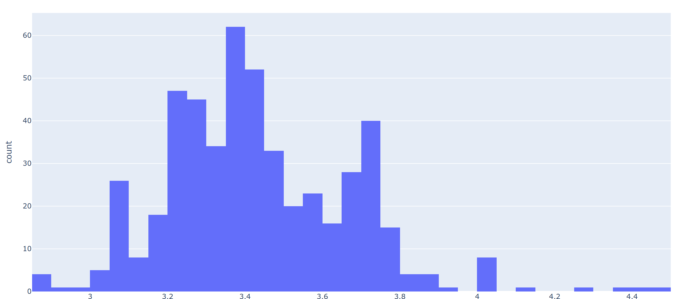

3-12-repo
实验结果¶

- loss曲线比baseline要高一些，主要是val_type_loss的影响
# /home/liem/data/mofbfn/checkpoints/logs/mof_bfn_volume/vol_floor_75/ckpt/epoch_887-step_253968-loss_13.3176.ckpt
2.2 推理与后处理命令¶
export LD_LIBRARY_PATH=/home/liem/.local/share/mamba/envs/mof-bfn/lib:$LD_LIBRARY_PATH
PYTHONPATH=. python -m experiments.infer \
experiment.wandb.name=infer_dng_test \
inference.ckpt_path=/home/liem/data/mofbfn/checkpoints/logs/mof_bfn_volume/vol_floor_75/ckpt/epoch_887-step_253968-loss_13.3176.ckpt \
inference.inference_dir=/home/liem/MOF-BFN/infer_results_test_3_12_vol_hinge
python -m postprocess.assemble \
--res_path /home/liem/MOF-BFN/infer_results_test_3_12_vol_hinge/raw_results.pt \
--bb_z_path /home/liem/data/mofbfn/datasets/dng/bb_emb_space_tot_z.pt \
--bb_blocks_path /home/liem/data/mofbfn/datasets/dng/bb_emb_space_tot_blocks_processed.lmdb \
--max_process 500
# 检查连通性（是否形成完整 3D 骨架）
python -m evaluation.connect_check \
--res_path /home/liem/MOF-BFN/infer_results_test_3_12_vol_hinge/raw_results.pt \
--bb_z_path /home/liem/data/mofbfn/datasets/dng/bb_emb_space_tot_z.pt \
--bb_blocks_path /home/liem/data/mofbfn/datasets/dng/bb_emb_space_tot_blocks_processed.lmdb \
--max_process 500
# 有效性检查（Validity Check）
python -m evaluation.validity_check \
--res_path /home/liem/MOF-BFN/infer_results_test_3_12_vol_hinge/samples \
--max_process 500
推理日志中关于 connect 与 validity 的摘要可视化如下。
3. 结构连通性结果对比（connect）¶
3.1 Baseline 结果¶
- connect：0.858

3.2 Vol_floor_75 结果¶
- connect: 0.886

3.3 结构质量指标对比¶
| 指标 (Metric) | 趋势 | Baseline | Vol_floor_75 |
|---|---|---|---|
| connect | ↑ | 0.858 | 0.886 |
| has_carbon | - | 1.000 | 1.000 |
| has_hydrogen | ↑ | 0.970 | 0.982 |
| has_atomic_overlaps | ↓ | 0.282 | 0.268 |
| has_overcoordinated_c | ↓ | 0.438 | 0.392 |
| has_overcoordinated_n | ↓ | 0.108 | 0.094 |
| has_overcoordinated_h | - | 0.368 | 0.368 |
| has_undercoordinated_c | ↓ | 0.242 | 0.194 |
| has_undercoordinated_n | ↓ | 0.106 | 0.108 |
| has_lone_molecule | ↑ | 0.168 | 0.258 |
| has_high_charges | ↓ | 0.184 | 0.174 |
| has_geometrically_exposed_metal | ↓ | 0.426 | 0.400 |
| all_checks (通过率) | ↑ | 0.194 | 0.226 |
目前效果还不错，我想要继续训练试试。
4. 体积分布分析：惩罚对生成晶体大小的影响¶
为定量分析体积惩罚对生成晶体大小分布的影响，对推理得到的 CIF 文件统计体积分布：
/home/liem/.local/share/mamba/envs/mof-bfn/bin/python - <<'PY'
import glob
import numpy as np
cifs = sorted(glob.glob('/home/liem/MOF-BFN/infer_results_test_3_12_vol_hinge/samples/pred_*.cif'))
print('cif_count', len(cifs))
vols = []
bad = []
# Prefer pymatgen for robust CIF parsing
try:
from pymatgen.core.structure import Structure
except Exception as e:
raise RuntimeError(f'pymatgen import failed: {e}')
for p in cifs:
try:
s = Structure.from_file(p)
vols.append(float(s.lattice.volume))
except Exception as e:
bad.append((p, str(e)))
vols = np.asarray(vols, dtype=np.float64)
print('parsed', vols.size, 'failed', len(bad))
if bad:
print('first_fail', bad[0][0], bad[0][1][:200])
if vols.size:
print('mean', vols.mean(), 'std', vols.std(), 'min', vols.min(), 'max', vols.max())
for p in [0,1,5,25,50,75,95,99,100]:
print(f'p{p:>3}', np.percentile(vols, p))
logv = np.log10(vols)
print('log10(V) p1/p50/p99', np.percentile(logv,1), np.percentile(logv,50), np.percentile(logv,99))
# plotly html
try:
import plotly.express as px
fig = px.histogram(x=logv, nbins=80, labels={'x':'log10(pred_volume)'}, title='Generated samples: log10(pred_vol)')
out = '/home/liem/data/mofbfn/infer_dng/samples/pred_log10vol_hist.html'
fig.write_html(out)
print('saved', out)
except Exception as e:
print('plotly failed/absent:', e)
PY
4.1 体积分布可视化¶
vol_floor_75¶

生成的分布符合正态分布，和trian data的吻合度也较高，但为什么仍然会有特别小的晶体？
train data¶

4.2 统计指标对比¶
| 统计指标 | Baseline (基准) | Vol_Hinge (优化) | 训练集参考 (GT) |
|---|---|---|---|
| 平均值 (Mean) | 3546.18 | 3208.05 | 5375.56 |
| 标准差 (Std) | 3671.51 | 2625.26 | 6563.75 |
| 最小值 (Min) | 718.47 | 710.05 | 534.48 |
| 最大值 (Max) | 44705.89 | 30431.21 | 193341.75 |
| P50 (中位数) | 2483.23 | 2504.75 | 3389.28 |
| P99 (百分位) | 16945.17 | 11152.35 | 33802.72 |
| \(\log_{10}V\) (P1/P50/P99) | 3.05 / 3.40 / 4.23 | 2.97 / 3.40/ 4.05 | 2.90 / 3.53 / 4.53 |
不知为什么整体变得更小了。